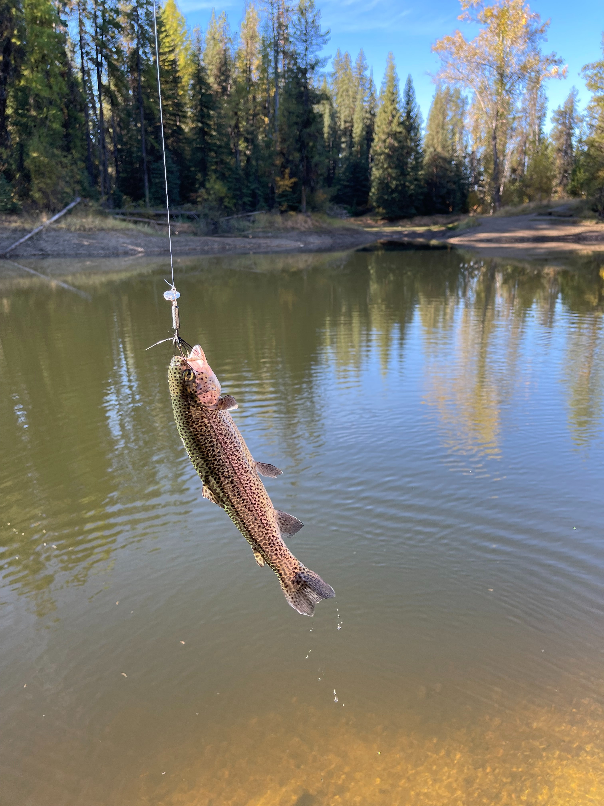
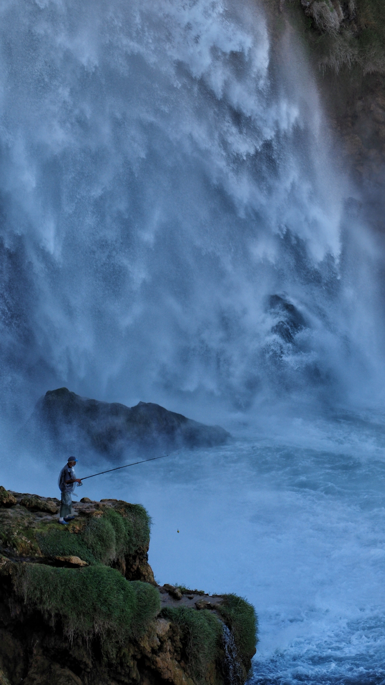

Fish
Hover over the image to see a benifit.


Control the Controlables
Fishermen never want to loose a fish, and they prioritise having that line in the water for as long as possible. Having to detangle and always fix or retie your line can be a huge drain of time. Most fisherman will pay an extra couple bucks to save time while out fishing. They will trade a couple bucks anyday for a longer time fishing. Logical Point I may say on the website, “All good fisherman know that the longer their line is in the water the better chance they have to catch a fish, countless inventions have been made to help us speed the process of fishing. A long time ago people used vine and bone to fish. While that works its not nearly effecive as where we are at now. Inventions such as the rod the reel and hook have all been made in an effort to speed the process of fishing up and help us not to loose the fish we are so seeking after. This line is one of those tools you can use to keep your line in the water longer to not have to loose the fish you have been searching all day for.
More tensile strength than any line youve ever used
Maximize the ammount of time your fly is in the water
More Than Just A Line
This line is more than just another line. If you truly want to bring your fishing game to the next level the next step is before you. This website will have many resources to help you make the decsion you will be happy with for the rest of your life. Click on the above links to see reveiws from customers and even commonly asked questions.
Join Us